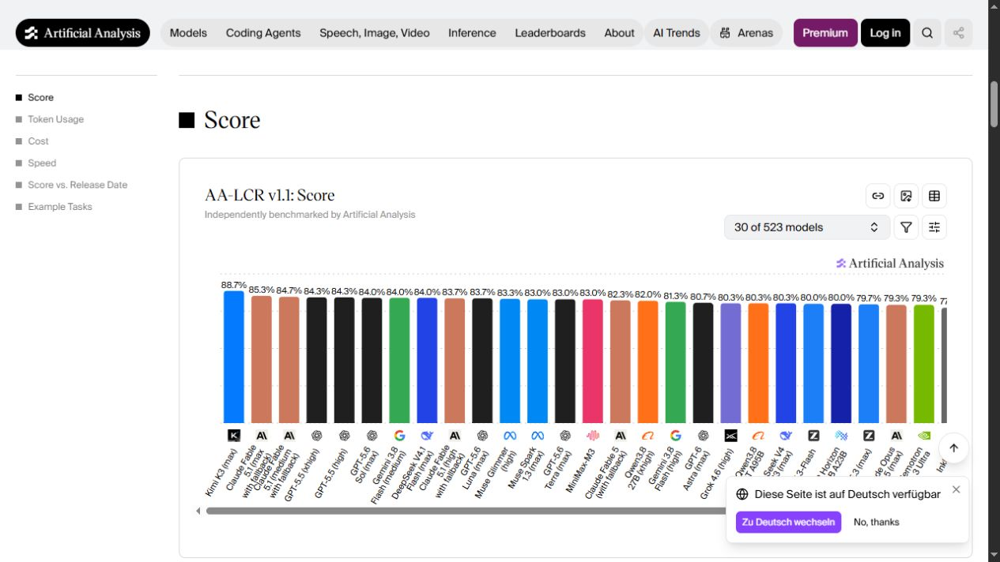
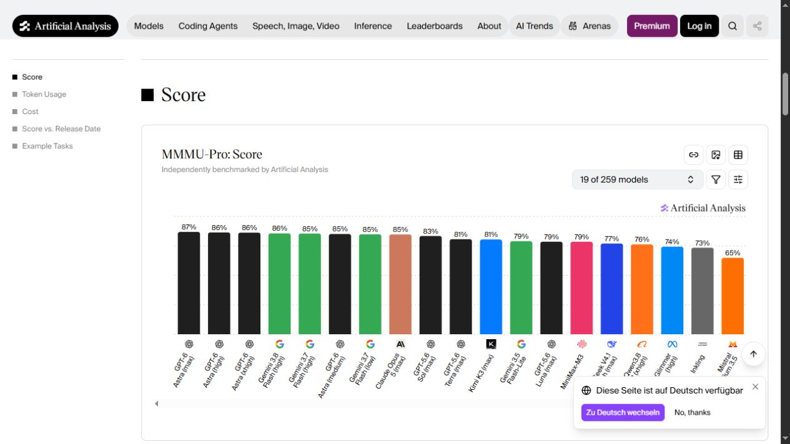
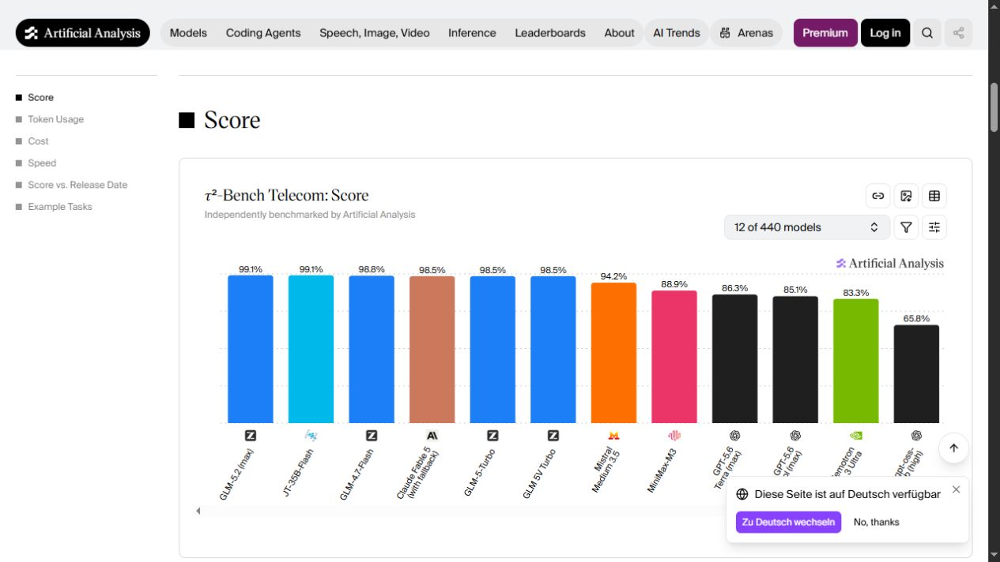
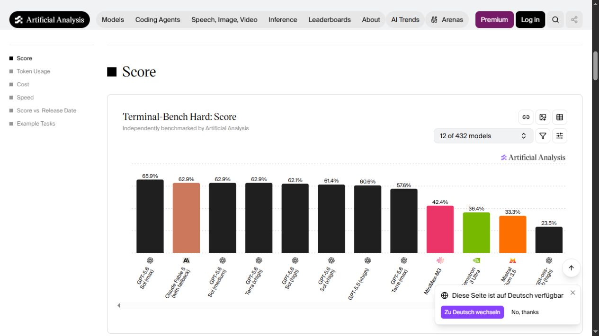
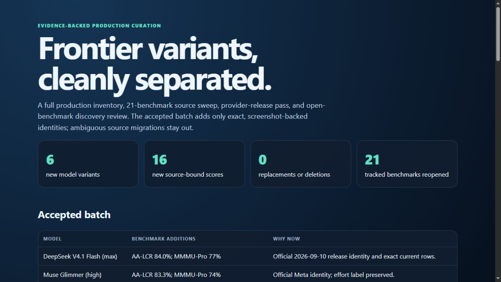
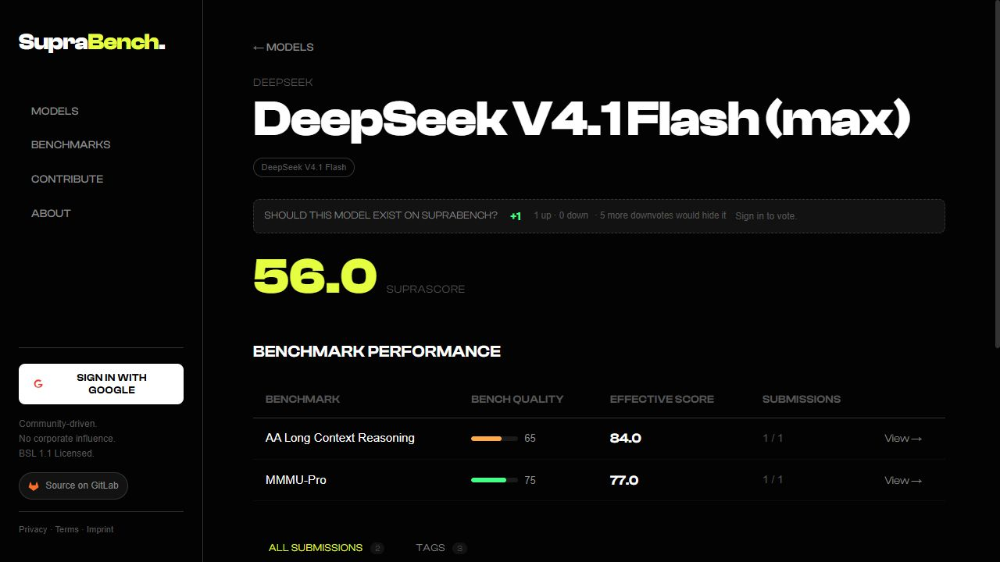
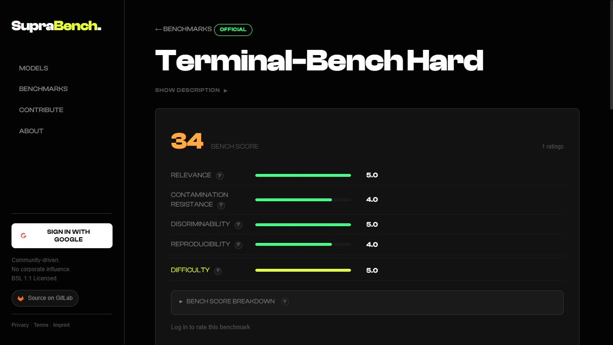

Frontier variants,
cleanly separated.
A full production inventory, 21-benchmark source sweep, provider-release pass, and open-benchmark discovery review. The accepted batch adds only exact, screenshot-backed identities; ambiguous source migrations stay out.
Accepted batch
| Model | Benchmark additions | Why now |
|---|---|---|
| DeepSeek V4.1 Flash (max) | AA-LCR 84.0%; MMMU-Pro 77% | Official 2026-09-10 release identity and exact current rows. |
| Muse Glimmer (high) | AA-LCR 83.3%; MMMU-Pro 74% | Official Meta identity; effort label preserved. |
| Mistral Medium 3.5 | MMMU-Pro 65%; Tau2 94.2%; TB Hard 33.3% | Official model identity and three independent rows. |
| NVIDIA Nemotron 3 Ultra | Tau2 83.3%; TB Hard 36.4% | Official NVIDIA identity; AA short label explicitly aliased. |
| GPT-5.6 Sol (high) | TB Hard 62.1% | Reasoning effort kept separate from existing max/xhigh rows. |
| GPT-5.6 Terra (xhigh) | TB Hard 62.9% | Reasoning effort kept separate from existing max row. |
Existing identities also receive MMMU-Pro rows for Claude Opus 5 (Max), GPT-5.6 Sol (max), GPT-5.6 Terra (max), and Kimi K3 (max), plus Tau2 for Claude Fable 5 (adaptive max/fallback).
Tracked benchmark sweep
| Benchmark | Decision | Observation |
|---|---|---|
| AA Long Context Reasoning | 2 inserts | DeepSeek V4.1 Flash and Muse Glimmer entered the visible top set. |
| MMMU-Pro | 7 inserts | Three new identities plus four missing exact existing variants. |
| Tau2 Telecom | 3 inserts | Mistral, Nemotron, and the exact Fable fallback variant. |
| Terminal-Bench Hard | 4 inserts | Mistral, Nemotron, Sol high, and Terra xhigh. |
| DeepSWE | defer | Current effort labels disagree with older source-bound identities; migration needed. |
| Humanity's Last Exam | defer one row | DeepSeek V4 Pro 0813 cannot be safely folded into the older V4 Pro identity. |
| ALE v1 Codex, APEX-AA, ARC2, ARC3, EnigmaEval, ERQA, IntPhys2, MindCube, SciCode, SkateBench, SpatialViz, SWE-Pro, SWE Verified, TB v2.1, TextQuests | no write | No exact, policy-safe new production row found. |
Source evidence




Live deployment



Provider and discovery review
DeepSeek's release log confirms V4.1 Flash; Meta exposes Muse Glimmer; Mistral lists Medium 3.5; NVIDIA documents Nemotron 3 Ultra. Qwen3.8-Flash-Next was observed but has no accepted compatible source row yet. No other provider page produced a new, exact, score-backed identity for this run.
Validation and production
Preflight
Visible example.com gate passed; clean origin/main worktree; production mirror 673/673 with zero drift.
Apply
Guarded apply created exactly 6 models and inserted 16 scores. No benchmark, replacement, refresh, or deletion was performed.
Postflight
Mirror 689/689, drift 0; repeat dry-run: all 16 unchanged; 14 test files and 139 tests passed; tier and credential checks clean.
Sources
- ARC Prize leaderboard
- ARC-AGI-3
- Agents' Last Exam
- APEX-AA
- DeepSWE
- EnigmaEval
- ERQA
- Humanity's Last Exam
- IntPhys2
- MindCube
- MMMU-Pro
- SciCode
- SkateBench
- SpatialViz
- SWE-Pro
- SWE Verified
- Tau2
- TB Hard
- TB v2.1
- TextQuests
- AA-LCR
- DeepSeek updates
- Meta AI
- Mistral models
- NVIDIA Nemotron 3
- TB v4.0 candidate
- CritPt candidate
- MLCR-AA candidate
- GDP.pdf candidate
- E-CommerceBench
Generated 2026-09-14 11:17 CEST. Scores preserve SupraBench's benchmark-specific raw scaling.